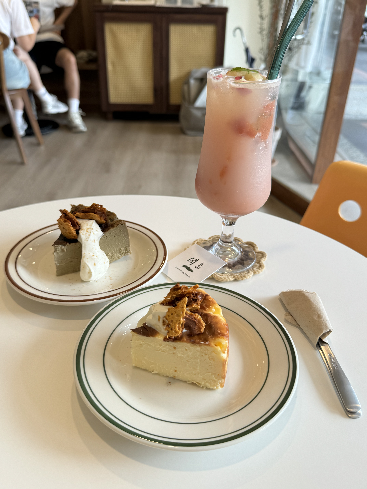
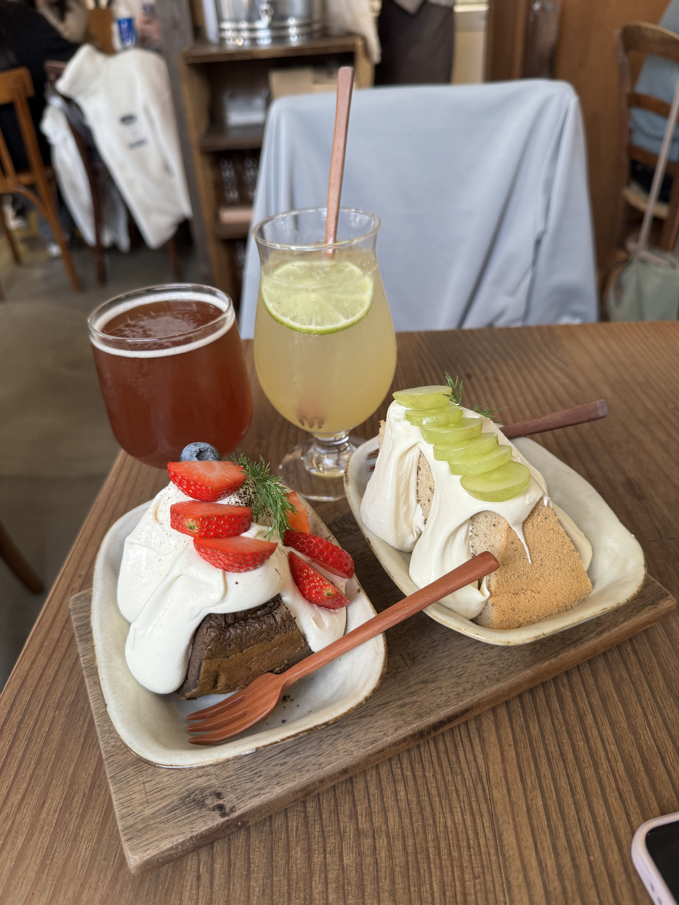
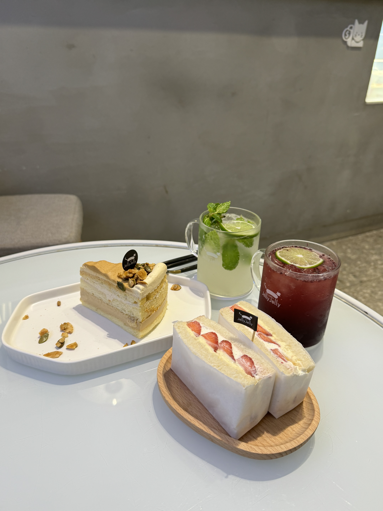
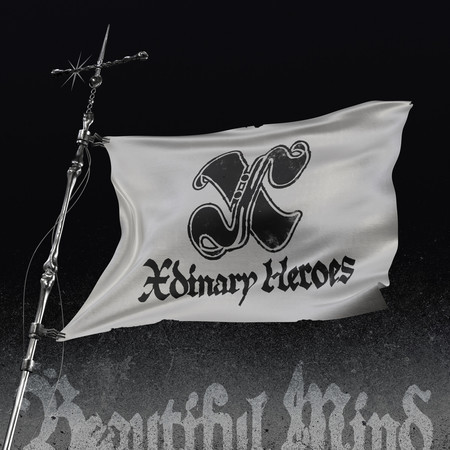
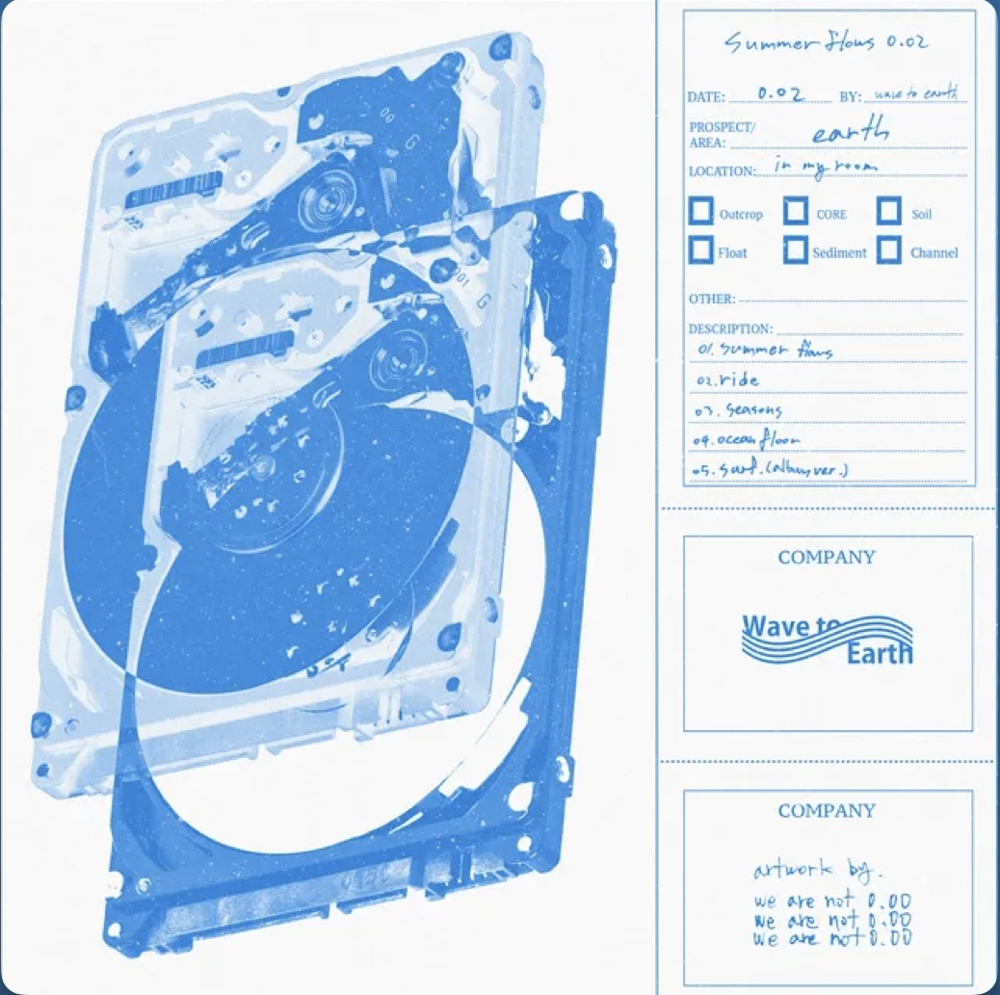

徐沛妤 A113070039
資訊傳播學系
a113070039@mail.shu.edu.tw
大家好，我是資傳系大一的學生，我叫徐沛妤，平常喜歡去各種咖啡廳，聽聽音樂，追星和看風景。我比較喜歡靜態一點的活動，像是追劇，做甜點，和朋友聊天。目前還在摸索未來能夠從事什麼職業，希望我能夠訂定目標，找到自己的方向。
大家好，我是資傳系大一的學生，我叫徐沛妤，平常喜歡去各種咖啡廳，聽聽音樂，追星和看風景。我比較喜歡靜態一點的活動，像是追劇，做甜點，和朋友聊天。目前還在摸索未來能夠從事什麼職業，希望我能夠訂定目標，找到自己的方向。
1.閾島
2.卜卜商店
3.Jelly Jelly
這是一個JYP旗下的韓國樂團，我的本命是裡面的電吉他手-郭智碩，他很有魅力，很可愛，是整團裡面最小一隻，很難不讓人喜歡!!希望未來的某一天能夠親自見到他們!
這是我第一次買他們的專輯

這是他生日時開的直播!
這是我很喜歡的一張拍貼，剛好也是很喜歡的溫水cp
1.Supernatural
2.seasons
3.離開的一路上

我覺得這是一個很特別的回憶，因為學校幾乎都是女生，只有零星幾位男生，很有趣，經歷了很精彩又蠻艱辛的過程，到現在還是偶爾會懷念每天坐在教室一起上課的時光!

不知不覺大一體驗卡也快結束了，這一年認識了許多新朋友，也學到了蠻多，不過我仍然正在思考人生的方向，希望我能夠早日規劃好目標並且朝著它前進!
這些是我從以前到現在有做過或拍過的一些作品，雖然不是很完美，都是第一次接觸時的作品， 而我也不是專業攝影師，這些都是平常看到喜歡的風景或照片瞬間拍下的照片。


Apart from being a web developer, I enjoy most of my time being outdoors. In the winter, I am an avid skier and novice ice climber. During the warmer months here in Colorado, I enjoy mountain biking, free climbing, and kayaking.
When forced indoors, I follow a number of sci-fi and fantasy genre movies and television shows, I am an aspiring chef, and I spend a large amount of my free time exploring the latest technology advancements in the front-end web development world.